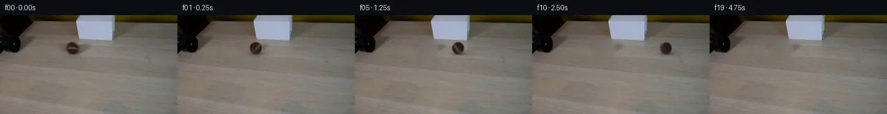

![首帧]()

Round 00
2026-11-05T16:31:16.396792+00:00像素候选变化代码 +207/−0inspection 更新
pixels 3f642341e9f4094f · code 28d3a4216ff7ee51
查看本轮 generate.py 真实 diff
--- previous/generate.py +++ current/generate.py @@ -0,0 +1,207 @@ +"""PixelWorld-Text continuation using local source pixels and analytic rolling.""" +from pathlib import Path +import json +import base64 +import re +import numpy as np +from PIL import Image, ImageDraw +from scipy.ndimage import gaussian_filter, map_coordinates +import cv2 +from artifact_io import save + +ROOT = Path(__file__).resolve().parent +W, H, N = 256, 144, 20 +CX, CY, RX, RY = 104.0, 48.0, 8.6, 8.6 +FPS = 4 +Y, X = np.mgrid[:H, :W].astype(float) + + +def clean_plate(source): + """Restore only the source ball and its attached soft shadow.""" + # This geometric support includes the soft edge and shadow of the old ball. + # Its lower/right extent does not remove the lampshade silhouette. + e = ((X - 103.0) / 20.0) ** 2 + ((Y - 49.0) / 15.0) ** 2 + region = e < 1 + # Harmonic reconstruction propagates the surrounding local wood/illumination. + unknown = region.copy() + fill = source.astype(float).copy() + seed = cv2.inpaint(source, unknown.astype(np.uint8) * 255, 4, cv2.INPAINT_TELEA) + fill[unknown] = seed[unknown] + for _ in range(900): + avg = (np.roll(fill, 1, axis=0) + np.roll(fill, -1, axis=0) + + np.roll(fill, 1, axis=1) + np.roll(fill, -1, axis=1)) * 0.25 + fill[unknown] = avg[unknown] + # Retain unobscured tiny wood texture by transplanting local high frequencies. + residual = source.astype(float) - gaussian_filter(source.astype(float), (1.05, 1.05, 0)) + tex = np.roll(residual, 35, axis=1) + blend = np.clip((1 - e) * 5, 0, 1) + fill += tex * blend[..., None] * 0.55 + plate = source.astype(float).copy() + plate[region] = fill[region] + return np.clip(plate, 0, 255), region + + +def light(normals): + # Normals use x right, y up, z toward camera. Soft, fixed room lighting. + direction = np.array([-0.40, 0.48, 0.78]) + direction /= np.linalg.norm(direction) + diffuse = np.clip(np.sum(normals * direction, axis=-1), 0, 1) + return 0.75 + 0.30 * diffuse + + +def build_texture(source, plate): + """Recover a source-derived reflectance map on the visible hemisphere.""" + sy, sx = np.mgrid[:H, :W].astype(float) + u = (sx - CX) / RX + v = -(sy - CY) / RY + rr = np.sqrt(u * u + v * v) + z = np.sqrt(np.maximum(0, 1 - rr * rr)) + normals = np.stack([u, v, z], axis=-1) + # A softened silhouette approximates the source camera's subpixel edge. + alpha = np.clip((1.04 - rr) / 0.18, 0, 1) + recovered = (source.astype(float) - plate * (1 - alpha[..., None])) / np.maximum(alpha[..., None], 0.08) + recovered = np.clip(recovered, [30, 16, 9], [122, 124, 137]) + texture = recovered / light(normals)[..., None] + return texture + + +def rotate_inverse(normals, angle): + # Axis is perpendicular to travel on a tabletop viewed obliquely from above. + axis = np.array([0., 0.64, 0.76837491]) + axis /= np.linalg.norm(axis) + c, s = np.cos(-angle), np.sin(-angle) + return (normals * c + np.cross(axis, normals) * s + + np.sum(normals * axis, axis=-1)[..., None] * axis * (1-c)) + + +def ball_layer(texture, center): + # Supersampling integrates both the silhouette and the small fuzzy sphere. + S = 4 + half = 13 + sz = 2 * half * S + yy, xx = np.mgrid[:sz, :sz].astype(float) + px = (xx + .5) / S - half + py = (yy + .5) / S - half + u, v = px / RX, -py / RY + r2 = u*u + v*v + valid = r2 < 1 … diff truncated; 120 more lines …